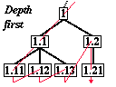
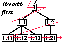

HOME
Tractatus Logico-Philosophicus : About this site
About this Site
Jonathan Laventhol
What is it?
This site is about the influential
book Tractatus
Logico-Philosophicus, published in 1922 by the
Anglo-Austrian philosopher Ludwig
Wittgenstein (1889-1951). The book is written in 526
numbered paragraphs which are structured as notes about
notes on wide-ranging topics;
much of it is about formal logic and its limits.
These web pages present the entire standard English
translation by C.K. Ogden
next to the original German, in a form which
encourages understanding the text's structure. The pages are
complete with the formulas, diagrams, and tables of the
original, along with the introduction by Bertrand Russell.
Who made it and why?
The site was made by myself as an private study aid while
revisiting the Tractatus after many years. You will
have to make up your own mind about whether such a tool helps
or hinders your appreciation of the book.
The curious who wish to dip into Wittgenstein will like the
web pages; anyone actually wanting to read the whole book is is
recommended to read the paper copy in a silent room with pencil
and paper handy.
Although the site is intended as an English site about a
text in German, it would be interesting to hear from anyone
with good translations in other languages.
The Ogden Translation
The intention was to remain as faithful as possible to the
Ogden translation, published by RKP. As the translator says in
his Note, some of the translation is
rather literal; some of the syntax not English is.
Spellings are those in the book: usual for its time and
place. Those searching the text electronically might be warned
that these that these include ``to-morrow'', ``connexion'',
``an hypothesis'', as well as ``colour''; mostly ``-ize'' is
preferred over ``-ise''.
Omitted are: Max Black's index, and German text for
three-digit propositions (except under 1 and 2, which are
complete). The German text is to be considered experimental:
it wasn't typed or read by a German speaker.
The Source
- Tractatus Logico-Philosophicus
-
by Ludwig Wittgenstein
German text with an English translation en regard
by C.K. Ogden; with an
introduction by Bertrand Russell.
Routledge and Kegan Paul, London 1922
ISBN 0 7100 3004 5
ISBN 0 7100 0962 3 (paperback)
Too much logic for you?
Those interested in Wittgenstein's early thought but who
aren't interested in logic might care to look at these
parts:
- 4.11
- about the nature of science, philosophy
- 5.6
- about the limits of language; solipsism
- 6.3
- about causality, science
as description; what ``natural laws'' are
- 6.4
- about ethics, death, mysticism
- 6.5
- about scepticism; limits of philosophy
- 7
- about when to stop speaking
What the Tractatus says about the World Wide Web
It might be noted that
6.54 can be read as if it is about
this web site. And perhaps
6.341 is about digital images.
Symbolic Notation
The symbolic notation is Peano-Russell, as
Wittgenstein used. It would
perhaps have been tempting to add ``translations'' in a
more modern
notation, but as the book is so concerned with subtleties of
notation, that is a path I feared to tread.
(See, for example,
5.461.)
If you're interested in the sections about logic, you've
probably met this
notation before: if not, be warned that as well as indicating
conjunction, `.' is also used to disambiguate expressions like
``p . s .v: q . s .v. r . s''
which might otherwise be written
``(p . s) v [(q . s) v (r . s)]'';
universal and existential quantification are written
``(x)'' and `` x''. You may find
the table at
5.101
useful for the boolean operations.
As well as the notes within the book,
Russell's
introduction is
well worth reading and covers some of Wittgenstein's particular
notation.
The typographical discrepancy was removed, and ``Mr
Wittgenstein's symbol'' is reproduced as
[
x''. You may find
the table at
5.101
useful for the boolean operations.
As well as the notes within the book,
Russell's
introduction is
well worth reading and covers some of Wittgenstein's particular
notation.
The typographical discrepancy was removed, and ``Mr
Wittgenstein's symbol'' is reproduced as
[ ,
,  , N()],
the same way it is given in the text (at
6).
, N()],
the same way it is given in the text (at
6).
What order to read the propositions?
The footnote explaining the numbering
* says:
-
The decimal figures as numbers of the separate
propositions indicate the logical importance of the
propositions, the emphasis laid upon them in my exposition.
The propositions n.1, n.2, n.3, etc., are
comments on proposition No. n; the propositions
n.m1, n.m2, etc., are comments on the proposition
No. n.m; and so on.
One the many questions which the Tractatus
raises is this: is really written to be read linearly? Does it
make -- possibly more -- sense to read it in the other order?
One of the unusual features of the book is that it
has an obvious other way to read it, ignoring
browsing: read all the
one-digit sections, then the two-digit sections, and so on.
The printed order we could call ``depth-first'', and the
other order ``breadth-first'' -- following the conventional
computing terms --
and can be shown like this:


The experiment is to read the text in breadth-first order,
which is impractical with the printed book: too much
page-turning.
You'll quickly find that breadth-first reading puts enormous
strains on your memory and renders the book
unintelligible.
Instead, if we take Wittgenstein's other meaning of the
numbering: he places more emphasis on the shorter numbers.
This suggests another reading: depth-first, but limit yourself
to, for example, two digits unless you're especially interested.
Lastly, browsing. Many people like to browse the
Tractatus and pick parts out at random. You will find
the map handy for this.
The Phantom Propositions
Although Wittgenstein says that ``the propositions
n.m1, n.m2, etc., are comments on the proposition
No. n.m'' this isn't strictly true. For example,
Proposition 2 is followed by 2.01, not 2.0 -- giving rise to an
opportunity for ``angel/pinhead'' disputation.
We will try to stay with the angels: a pragmatic decision
was made to add ``phantom'' propositions, whose numbers end with
``0'', as this makes the pages shorter.
Experimentation
showed that the best structure for the web site was for each
proposition to have its own page, with showing the proposition
and annotations to it. In general, interactive text web sites
appear to work best when they are ``short and bushy'' (short
pages, many links) rather ``tall and sparse'' (long pages, few
links).
To do this, fifteen phantoms were added --
you can read the notes under them yourself
and perhaps find some
significance in their absence from the original:
2.0,
2.020,
2.20,
3.00,
3.0,
3.20,
4.00,
4.0,
5.0,
5.10,
5.50,
5.530,
6.00,
6.0,
6.120.
Technical Information
The pages were made by a computer program which
makes the individual pages with the appropriate
propositions and links. It also makes the maps and helps with
the formatting of of the formulas. The program is written
in C and runs on a small Unix computer.
The structure of the site is as simple as possible so that
the pages work as local files as well as on a web server.
The pages were designed to
be able to be read with almost any browser, including
text-only. The formulas are constructed with small images to
give as faithful a representation as possible of the original:
most are done with images of individual characters
(e.g. 6) and two with blocks
(4.27,
4.42).
There are four pages with diagrams
(5.5423,
5.6331,
6.1203,
6.36111) and three with tables
(4.31
4.442
5.101). Your browser must show
ISO-8859-1 (Latin 1) characters to get Greek mu (µ),
multiplication sign (×) and the most common: a non-break
space: (x x different to xx).
Occasional accents are used: rôle and æsthetics.
Address
Jonathan Laventhol
jonathan@pavilion.co.uk
Correspondence about this site is welcomed.
Brighton, 3 October 1996